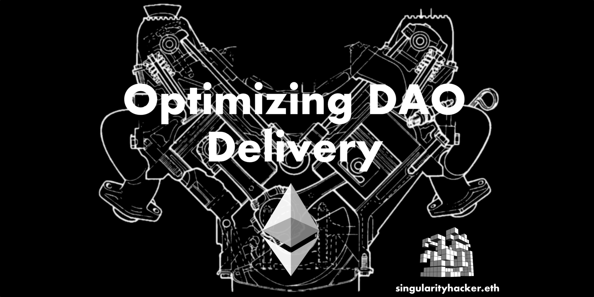

Optimizing DAO Delivery
Originally published at https://paragraph.com/@0xjustice/optimizing-dao-delivery

Decentralized Autonomous Organizations (DAOs) are the next evolution in human organization. They are enabled by the Internet and will, most assuredly, have an impact just as large. While their present state is one of early infancy, they are the ground soil from which the world’s first true digitally native nations will emerge. It’s in their core design to enable outputs and outcomes of greater efficiency than traditional organizations could ever hope to imagine.
This is wrought through at least three unique mechanisms made possible by the peculiar characteristics of blockchain and smart contract technology. These three mechanisms are dramatically improved coordination through programmable agreement, aligned incentivization through shared tokens, and radical inclusivity made possible through permissionless membership and global digital access. To put it simply, the purpose of a DAO is to accomplish more. More info: State of the DAO
Promise vs Reality
Unfortunately, the experience for many new DAO members can fall short of this lofty vision. Coordination overhead can feel even higher than traditional organizations, investment criteria for projects can be less than explicit, and new members can struggle to find their place and remain engaged in the chaos. If the very purpose of a DAO is to mitigate these shortfalls but they are growing worse, we must ask why.
Many suggest that things will naturally and inevitably get better with time but the persistent existence of the tragedy of the commons says otherwise. If it is assumed that efficient and virtuous structures will emerge naturally with time, then one must ask why they didn’t in the old system. What can be done about this?
Structured for Delivery
Function follows form. How people are organized will determine the limits of what they can produce. This has been stated in Conway's law which states that product architecture will match organizational structure. Org structures determine communication lines and those lines will determine the shape of what's produced. It’s conceivable then that some of the DAO shortfalls might be addressed by restructuring how a DAO is organized.
There are two kinds of organizational building blocks and organizations tend to favor one. The first kind is the specialist team, also known as a component team. Classical organizations heavily relied on these through the use of departments. The second and alternative kind is the feature or product delivery team. These are cross-functional units that possess the skills necessary to deliver an outcome from soup to nuts. They are solely responsible for the success or failure of a product's launch and support.
While specialist units do have their place, they suffer from deficiencies that make them death sentences to organizations that try to leverage them as their primary building blocks. The biggest deficiency is that they dramatically increase coordination overhead. Product teams, on the other hand, need no extraneous external assistant communication to deliver value. They are, by definition, self-governed atomic units that possess all the resources and talent to deliver the promised output. They are the ultimate engines of organizational delivery. It's also for this reason why many of the world’s most successful product companies organize around them and why they are the basis for ideas like The Lean Startup. (It’s also why technologies like micro front-ends will play a much bigger part in application architectures of the future.)
‘Eliminate’ Coordination
Coordination overhead is reduced by eliminating dependencies. Too much time is spent on managing dependencies when we should be talking about eliminating them. This can be seen in Brooks Law which states that adding more manpower to a late project makes things even slower. This is primarily due to the combinatorial explosion in communication channels as more resources are added. This is exactly the culprit that rears its ugly head in a specialist group-dominated organizational structure. Let’s say your organization has 8 specialist groups. How many groups need to be coordinated to deliver a single product deliverable? The answer is all of them. Add another product and you have just doubled the overhead. Once this trend starts then more organization units will be birthed in an attempt to deal with the overhead and the pointed horns of Moloch, the god of coordination failure, once again emerge.
This was the genius of Jeff Bezos’s famous API mandate which stated that all cross-team communication had to happen via API, not interpersonal meetings, and then anyone failing to do so would be promptly fired. With one fail swoop, Jeff Bezos disintegrated an order of magnitude of coordination management.
“It might seem improbable, but Amazon’s incredible growth can largely be attributed to the API Mandate. To paraphrase Benedict Evans, it has turned Amazon into ‘a machine for making more Amazon’.” - Chrislaing.net
Following this train of thought, Jade Rubick insightfully observes in How to build silos and decrease collaboration (on purpose) that silos rightly exist to compensate for limitations in human cognition and argues that we should be strategically using them to maximize collaboration within teams and minimize collaboration between them. All of this becomes possible when an organization is built around execution teams. Coordination can be minimized while delivery becomes supercharged.
Implementation
The question then arises of how to implement the above knowledge in an already functioning DAO that has been predominantly structured around specialty groups. Like all things blockchain, DAOs can pose a natural resistance to cross-cutting changes as processes and procedures have likely evolved through layers of consensus. With this consideration in mind, I suggest the following non-controversial steps to raise the prominence of the DAOs existing execution teams:
-
Establish visibility. Move the main DAO projects/products to your DAOs wiki and/or website homepage. To further increase visibility, create dedicated channels for each product and make their development and progress the primary emphasis of the DAO’s regular community call.
-
Differentiate by tooling. Create dedicated Github repositories for all funded projects under the DAO’s official organizational account. This will introduce concrete feature team membership through repository access and make team progress transparent. This also has the benefit of introducing project boards that can have concrete assignees and release target dates.
-
Prioritize product funding. As a DAO, increase focus on funding products with clear revenue models and proven execution teams. This doesn’t mean specialty groups can't be funded on the basis of public goods but that should not be the major thrust of funding.
Benefits
In conclusion, let me suggest the several benefits that should come from such a strategy.
Firstly, your DAO will be structured for effective delivery. If you organize around user-facing value, you will inevitably improve that delivery.
Secondly, with such a straightforward organization, new members can clearly see where the existing need is and can join teams and contribute without having to understand everything that’s happening across the DAO. This makes for easier onboarding and lends itself to sustained engagement.
Thirdly, the DAO will be adequately structured for scalability through new products and services with their own respective executions teams. You will have effectively map-reduced the productive output of the DAO.
Lastly, the investment criteria for projects will be made patently clear because it will have been boiled down to a fundamental question of ROI (return on investment). The only question that needs to be asked is if the product is profitable and how it can be developed to be so if not currently.
A special thanks to brustkern.eth for proofreading and editing this post. DAO’s rule!
Originally published on 0xJustice.eth